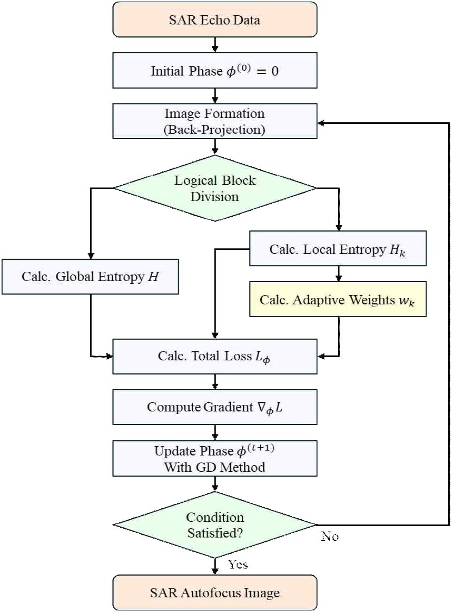

연구실적 · 국내전문학술지
SAR 영상의 전역 품질 개선을 위한 적응형 블록 가중 최소 엔트로피 자동초점 기법
Adaptive Block-Weighted Minimum-Entropy Autofocus for Global SAR Image Quality Improvement
 DOI
DOI PDF
PDF
초록
최소 엔트로피 자동초점(MEA)은 합성개구레이다(SAR) 영상 품질을 향상시키는 대표적인 기법이지만, 목적 함수의 기울기가 강한 산란체 지역에 지배되어 상대적으로 약하거나 분산된 산란체 지역의 초점 개선이 제한되는 문제가 있다. 본 논문에서는 이러한 공간적 최적화 편향 문제를 완화하기 위해 블록 단위 엔트로피 기반 적응형 가중치를 도입한 적응형 블록 가중 최소 엔트로피 자동초점(ABW-MEA) 기법을 제안한다. 제안 기법은 MEA 과정에서 영상의 블록(지역)별 엔트로피 정보를 활용하여, 품질이 낮은 블록의 기울기 가중치를 동적으로 조정하여 위상 보정파라미터 추정 과정에서 모든 지역을 균형 있게 고려하도록 한다. 실제 SAR 데이터를 이용한 검증을 통해 강한 산란체와 분산 표적이 혼재된 환경에서 제안 기법이 분산 표적 지역의 국부 엔트로피를 약 0.36 감소시켜(기존 기법 0.09 감소), 공간적 품질 불균형을 효과적으로 해소함을 확인하였다.
사이트 원문 표기
유용선 Yong-Sun Yoo, 이찬희 Chanhee Lee, 이우경 Woo-Kyung Lee, “SAR 영상의 전역 품질 개선을 위한 적응형 블록 가중 최소 엔트로피 자동초점 기법”, 한국전자파학회논문지, 제37권 3호, 2026년
BibTeX
@article{Yoo_2026,
title={Adaptive Block-Weighted Minimum-Entropy Autofocus for Global SAR Image Quality Improvement},
volume={37},
ISSN={2288-226X},
url={http://dx.doi.org/10.5515/kjkiees.2026.37.3.301},
DOI={10.5515/kjkiees.2026.37.3.301},
number={3},
journal={The Journal of Korean Institute of Electromagnetic Engineering and Science},
publisher={Korean Institute of Electromagnetic Engineering and Science},
author={Yoo, Yong-Sun and Lee, Chanhee and Lee, Woo-Kyung},
year={2026},
month=Mar,
pages={301–308}
}